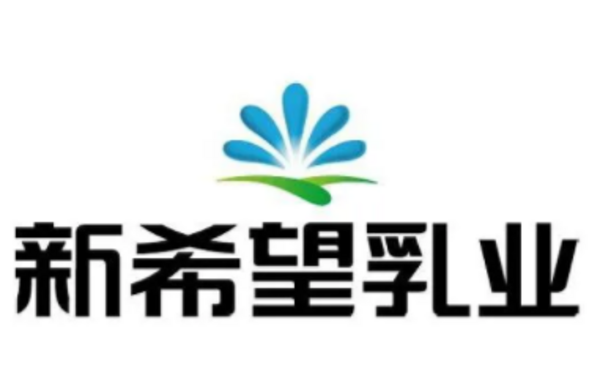
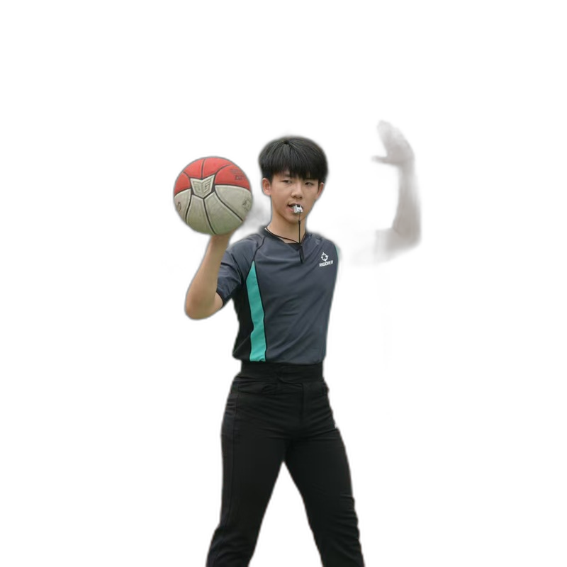
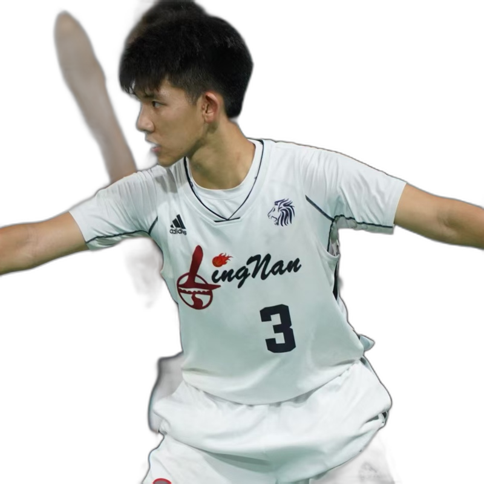

核心能力
先说我擅长什么，再用经历与作品证明。
港股 IPO 执行
从行业格局与竞争壁垒研究，到招股书章节起草与可比公司估值，覆盖 IPO 全流程的关键环节。
- 中信里昂证券 CLSA · 投行部分析师（2026.06 – 至今）
- 参与多家拟港股上市企业的 IPO 执行，覆盖医疗健康、科技与消费
- 为 A 股上市公司 H 股上市补充材料提供估值与报告支持
跨境并购与财务顾问
卖方项目从投资故事到交易执行：估值、买家分析与英文提案。
- 东南亚跨境医疗健康机构少数股权出售 · FA 项目
- Trading Comps / Transaction Comps 估值与战略买家分析
- 英文 RFP 提案制作
消费行业深度研究
以投资视角拆解消费公司与行业：从 Pre-IPO 尽调到潮玩、现制茶饮、出海。
核心能力
先說我擅長什麼，再用經歷與作品證明。
港股 IPO 執行
從行業格局與競爭壁壘研究，到招股書章節起草與可比公司估值，覆蓋 IPO 全流程的關鍵環節。
- 中信里昂證券 CLSA · 投行部分析師（2026.06 – 至今）
- 參與多家擬港股上市企業的 IPO 執行，覆蓋醫療健康、科技與消費
- 為 A 股上市公司 H 股上市補充材料提供估值與報告支持
跨境併購與財務顧問
賣方項目從投資故事到交易執行：估值、買家分析與英文提案。
- 東南亞跨境醫療健康機構少數股權出售 · FA 項目
- Trading Comps / Transaction Comps 估值與戰略買家分析
- 英文 RFP 提案製作
消費行業深度研究
以投資視角拆解消費公司與行業：從 Pre-IPO 盡調到潮玩、現製茶飲、出海。
Core Capabilities
What I do well — proven by work, not titles.
Hong Kong IPO Execution
From industry landscape and competitive moat research to prospectus drafting and comparable valuation — across the critical stages of an IPO.
- Analyst, Investment Banking at CLSA (Jun 2026 – Present)
- IPO execution for multiple Hong Kong-bound companies across healthcare, TMT and consumer
- Valuation and report support for an A-share issuer’s H-share listing
Cross-border M&A Advisory
Sell-side mandates from investment story to execution: valuation, buyer analysis and English proposals.
- Sell-side FA on a minority stake disposal in a Southeast Asian healthcare institution
- Trading Comps & Transaction Comps, strategic and financial buyer analysis
- English RFP pitch book
Consumer Sector Research
Deconstructing consumer companies through an investment lens — from Pre-IPO due diligence to collectibles, tea chains and going-global.
- Genesis Capital · Consumer Investing (Lalamove / Eastroc / CATL Pre-IPO CDD)
- Being Capital · HK-listed new consumer (LAOPU / POPMART / Bloks / MINISO)
- 50+ page collectibles deep-dive · 300 consumer surveys
- Reports: POP MART · Wan-dian chains · Wide phones
Valuation & Investment Narrative
Turning complex companies into clear stories: modeling, benchmarking and case teardowns.
- HollySys LBO analysis · Investment Banking coursework
- New Frontier valuation teardown (HK IPO pass-level)
- A deep research system across consumer & retail and healthcare
代表性项目
参与过的关键交易与投资。

代表性項目
參與過的關鍵交易與投資。
Selected Work
Key deals and investments I have been part of.
研究
成体系的研究输出：消费零售、医疗健康与跨行业框架。
消费 & 零售 Consumer & Retail
医疗健康 Healthcare

研究
成體係的研究輸出：消費零售、醫療健康與跨行業框架。
消费 & 零售 Consumer & Retail
医疗健康 Healthcare
Research
Systematic research output: consumer & retail, healthcare, and cross-industry frameworks.
消费 & 零售 Consumer & Retail
医疗健康 Healthcare
生活之外
工作之外的我。


生活之外
工作之外的我。
Beyond Work
Life outside the desk.